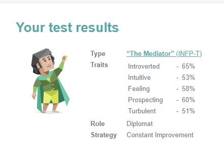

A personal profile can be a useful tool for employers when hiring people to be part of a team, the profile can be used to ascertain if the potential members of a team will have personality clashes etc. Members of a team that don’t mesh well together tend to cause productivity issues for a variety of reasons, but having differing and incompatible personalities within a team is a significant factor in the cause of those productivity issues.
Myers-Briggs Type Indicator (MBTI) test (www.16personalities.com,2020)
Type: “The Mediator” (INFP-T)
Traits: Introverted - 65%
Intuitive - 53%
Feeling - 58%
Prospecting - 60%
Turbulent - 51%

Learning Style Test (www.educationplanner.org, 2020)
Scores: Auditory - 35% Visual - 40% Tactile - 25% Type: Visual If you are a visual learner, you learn by reading or seeing pictures. You understand and remember things by sight. You can picture what you are learning in your head, and you learn best by using methods that are primarily visual. You like to see what you are learning. As a visual learner, you are usually neat and clean. You often close your eyes to visualise or remember something, and you will find something to watch if you become bored. You may have difficulty with spoken directions and may be easily distracted by sounds. You are attracted to colour and to spoken language (like stories) that is rich in imagery. Here are some things that visual learners like you can do to learn better: • Sit near the front of the classroom. (It won't mean you're the teacher's pet!) • Have your eyesight checked on a regular basis. • Use flashcards to learn new words. • Try to visualise things that you hear or things that are read to you. • Write down key words, ideas, or instructions. • Draw pictures to help explain new concepts and then explain the pictures. • Colour code things. • Avoid distractions during study times.
Emotional Intelligence Test (greatergood.berkley.edu, 2020)
Your Score: 17/20 Nice work. You seem naturally well-attuned to others' emotions--a vital skill for forming compassionate connections. You scored well above average but still have room for growth; research suggests that people can improve their emotion recognition skills with practice.
The results of these tests lend creed to my own knowledge of my personality, saying that mediators are quiet and private individuals (www.16personalities.com, 2020). As a mediator personality type I should be able to quite easily integrate with all types of people and work smoothly within a team environment.
As far as influencing my behaviour within a team, I don’t believe it will, as my own knowledge of my personality was already strong enough to know my strengths and weaknesses within a team. However it may question how I look at other members of the team, trying to work out their personality types, not for my interactions with them, rather to see if there are two people best kept separated.
When forming a team this information can be extremely important to employers looking to have their teams run efficiently as possible, as friction between team members can cause productivity and efficiency losses. Infighting and power struggles between team members also causes losses in efficiency and productivity due to differing creative directions or just people looking for more recognition for their work, people with a drive to be successful can also fall into this category. There definitely needs to be a strong leader in a team to make it successful, as the old adage goes “Too many chiefs, not enough Indians” meaning if too many people are trying to be the leader nothing gets done.